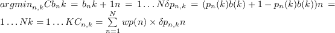

In Alastair McKinley (2009), McKinley details the development of MIPB as coming from a critical analysis of Multi-User Greedy Spectrum Balancing. One of the major deficiencies of Greedy is the (significant) possibility of the algorithm getting stuck in local minima, or getting 'deadlocked', whereby bits cannot be added to any lines due to any other line in the bundle attempting to violate its power constraint to accommodate the additional cross talk incurred, (see 2.31). To remedy this, an adaptive power penalty function is used to stop 'clean' lines being continuously loaded up to their power budget, and then 'locking' all other lines, and to instead force all the lines to be more or less equalised as the algorithm progresses. The algorithm for MIPB is shown in figure 12. The final bundle efficiency of MIPB, while non-optimal, is very close, but the real improvement is in runtime performance; 10 lines with rate targeting applied in under five minutes.
Appendix 12:
MIPB/Greedy algorithm
|  |
Appendix 13:
Adapted from McKinley '09, 'Caching' implies the use of PSD key-value caching, and * signified unmeasured/invalid execution times
|
Andrew Bolster
2011-05-22